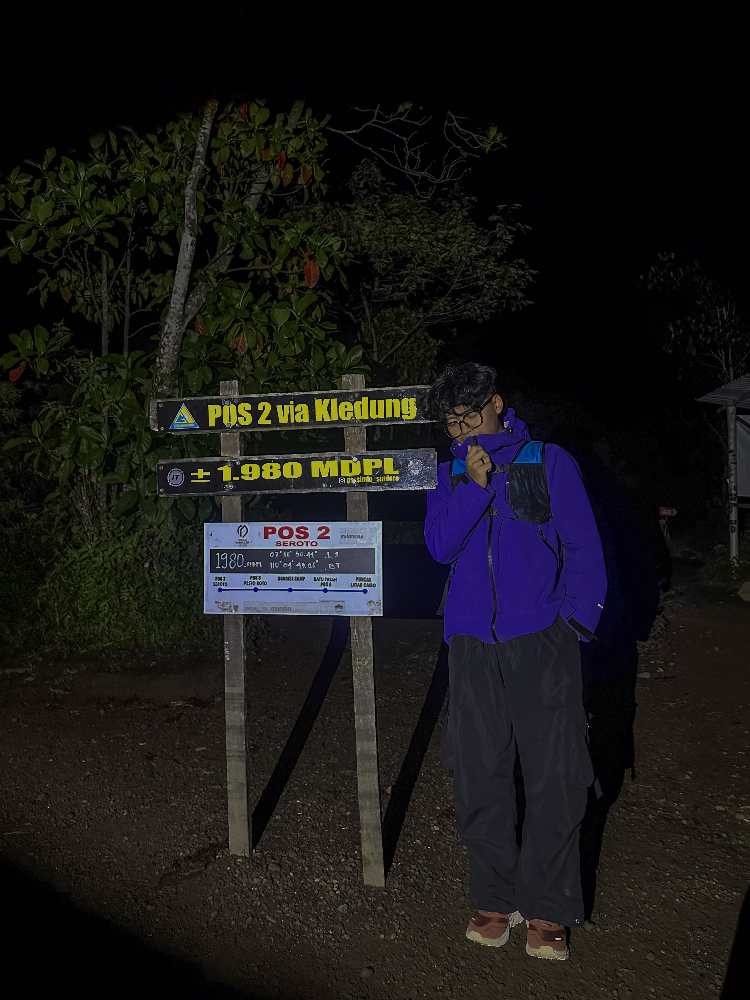

Menjaga server tetap menyala dan aplikasi tetap berjalan. Fokus pada infrastruktur IT, administrasi jaringan, dan pengembangan aplikasi mobile dengan Flutter.

Profesional IT dengan pengalaman menangani server, jaringan, virtualisasi, dan troubleshooting sistem berbasis Windows maupun Linux. Memiliki keahlian mengembangkan aplikasi mobile dengan Flutter, serta terbiasa mengelola proses publikasi aplikasi melalui Google Play Console dan App Store Connect.
Terbiasa bekerja mandiri maupun dalam tim, dengan kemampuan analitis yang membantu menemukan akar masalah dengan cepat dan memberikan solusi yang tepat guna — baik untuk kebutuhan operasional harian maupun proyek pengembangan jangka panjang.
Perangkat dan platform yang saya gunakan untuk mengelola infrastruktur dan membangun aplikasi.
Terbuka untuk peluang kerja, kolaborasi proyek IT, maupun pengembangan aplikasi mobile. Silakan hubungi lewat kanal berikut.